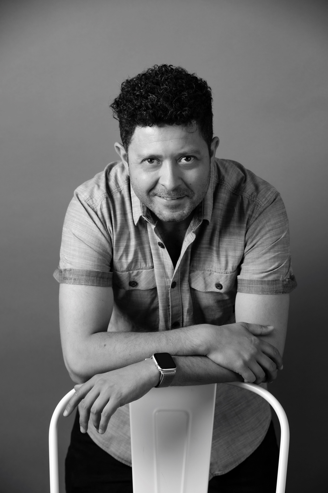

Mota
Morales
Comunicador audiovisual
Director · Santiago, Chile

Felipe Mota Morales
Historias audiovisuales, ideas en movimiento y una mirada puesta en las personas.
Comunicador audiovisual
Director · Santiago, Chile

Historias audiovisuales, ideas en movimiento y una mirada puesta en las personas.